Железные мечи, дневник из тыла.
Проклятая суббота, день 1-й войны (7 октября 2023):
Большая вечеринка начинается без нас.
Суккот. Мы на исходе недельной джиповой поездки по Румынии. Они начали вечеринку и даже не потрудились нас подождать.
На седьмой и последний день поездки. Ракеты, заложники, убитые и прочие радости.
Анат просыпается утром, в Румынии, и видит оповещения Командования тыла. А мы за границей. Бред какой-то!
Я решаю снять флаг с нашего джипа (в Румынии). Чтобы нас не опознали как израильтян за рубежом.
Идан звонит и сообщает, что мы вообще не понимаем, что происходит в стране.
Идан говорит, что такого мир ещё не видел.
Идан рассказывает, что граница с Газой обновилась.
Не в нашу пользу. (Каждый раз, когда я перечитываю это предложение, которое сам написал, что-то подкатывает к горлу.)
Что три базы ЦАХАЛа испарились. Что базы теперь сожжены и под контролем ХАМАСа.
Что кибуцы сожжены и опустели. А жители уже сделали релокейшн в Газу. (Заложники.)
По-моему, Идан перепутал и посмотрел 19-й сезон «Фауды».
Наше ощущение: ступор. Мы за границей. Далеко. Чувствуем, что нам не хватает какого-то измерения. Мы так далекооооо от всего.
Идан говорит, что это Йом Кипур — всё по новой.
А я уверен, что Идан преувеличивает.
Сегодня суббота. Идана подняли по тревоге. Это необычно. Берёт машину, паркует рядом со своей частью. Пишет «ЦАХАЛ» на записке, чтобы не получить штраф. Анат просит остаться в Румынии ещё на пару дней.
Но я чувствую слишком сильную связь со страной. Быть евреем — это ещё и не бросать, когда тяжело.
Авиакомпания отменяет наш рейс домой. А потом снова ставит обычным рейсом.
После душевных мытарств [[но об этом в другом посте]](https://edenguy.wixsite.com/blog/post/%D7%98%D7%99%D7%A1%D7%94-155) мы добираемся домой.
Сегодня у нас не было сирен.
Анат и дети спят в бомбоубежище.
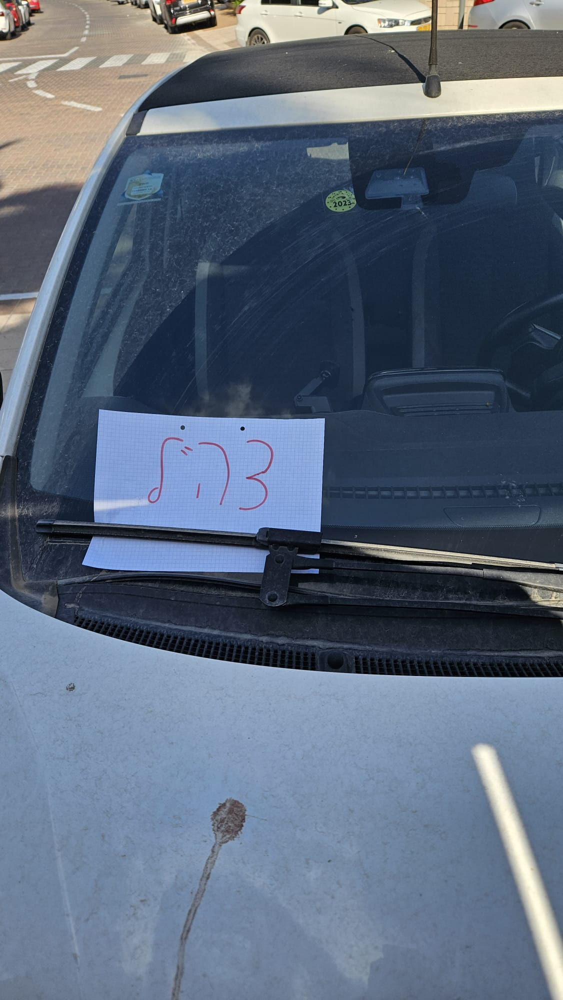
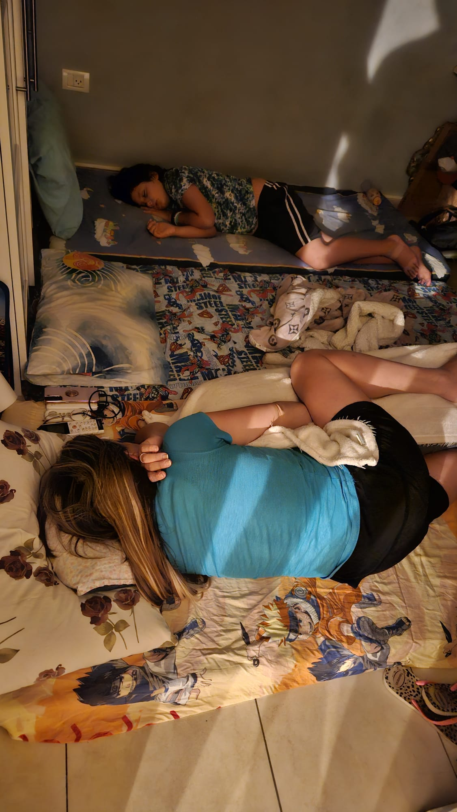
День 2-й войны (самый тяжёлый день)
Я чувствую себя тем ребёнком в первом классе, который не пришёл в школу в первый день, и весь год ощущает, что что-то пропустил, и спрашивает: «Ну, а что было в первый день?»
Мы слышим, что наблюдательниц из дивизии Газы заперли в комнате, сожгли, а потом сделали контрольный. Для верности. Интересно, у кого они этому научились.
Сапир, моя дочь-наблюдательница, рассказывает, что была кибератака на камеры.
У наблюдательниц не было картинки.
А когда камеры заработали, наблюдательницы увидели толпы террористов, пересекающих разделительный забор.
В тот же час произошла кибератака на связь.
Наблюдательницы не могли вызвать подкрепление, потому что связь была атакована.
Остальное — история.
Сапир прошла курс наблюдательниц полгода назад.
Сапир была направлена на позицию. Запросто могла оказаться на позиции в Газе.
Вероятность этого пугает меня до ужаса.
В параллельной вселенной у меня прямо сейчас дочь — заложница в Газе.
Или хуже.
Проводим на работе собрание всего израильского офиса.
Люди выкладывают всё, что на душе.
- Я жду повестку. А мне дают задачи от руководителей. А что, если я погибну в бою? Никто на работе даже не узнает, что меня убили. Люди в офисе не увидят меня несколько недель и просто забудут, что я существовал.
- Компания-то будет дальше платить нам зарплату? И через месяц-два боевых действий, когда мы неэффективны? Как нам платить за детский сад и ипотеку?
- У меня встречи с клиентами. Сегодня я вошёл на совещание, но мне сказали, что встреча накрылась, потому что мой клиент — в плену в Газе.
Ни один глаз не остаётся сухим в этом разговоре.
Это ужасно и потрясающе.
Никогда не испытывал эмоции такой силы.
Разве что 11 сентября.
После этого потрясающего разговора я звоню Идану. Рассказываю ему о том, что прозвучало на совещании. Не могу сдержать слёзы. Плачу ему в трубку.
Это самый тяжёлый для меня день психологически.
Ребёнок не должен видеть, как его отец ломается.
Или, может, всё-таки должен?
По новостям говорят сидеть по домам — террористы на пикапах разъезжают по дорогам.
Нашли пикап с террористами в полутора километрах от нашего дома.
Я закрываю картоном окна, выходящие на улицу. Чтобы с улицы не было видно света.
Это то, что делал мой дедушка в Войне за независимость. Когда их бомбили с воздуха. Светомаскировка.
Командование тыла выпускает экстренное сообщение, от которого, уверен, ни одной семье в Израиле спокойнее не стало.
«Экстренное сообщение» гражданам: Командование тыла призывает сегодня вечером запастись сухой едой, водой и другими предметами на 72 часа. Призыв обращён ко всем гражданам.
Вот инструкции:
- Запас воды — 3 литра на человека в день, на 72 часа
- Запас сухих и консервированных продуктов
- Средства освещения или фонарь на батарейках
- Средства для получения оповещений и новостей — радио на батарейках и портативные зарядные устройства для мобильных телефонов
- Лекарства
- Аптечка первой помощи
- Личные документы, удостоверения и наличные деньги
Португалия разрешит израильтянам подать на визу беженца. Думаю подать.
Семья в режиме полной боеготовности.
Я заготавливаю 400 литров воды.
Еду залить полный бак.
Боеготовность по полной.
Лиор пишет письмо солдатам.
Я звоню Сапир. Сапир говорит, что в соседнем с ней секторе прорвались в посёлки. У меня темнеет в глазах. Мне плохо.
Я в панике. Сделают ли они копию атаки на наблюдательниц в Газе?
Уровень стресса поднимается всё выше и выше. Бурлит. Вот-вот лопнет. Невозможно вместить весь этот ужас.
Я звоню Идану. Идан говорит, что если в новостях советуют запасаться батарейками и свечами, значит, «Хезболла» с севера и Иран — все приглашены на вечеринку.
Уровень стресса достигает точки кипения.
Не знаю, что с собой делать.
Это только второй день. И будущее нифига не радужное.
Завтра будет лучше. Вру себе.
Анат и дети спят в бомбоубежище.
Сегодня было 3 сирены.
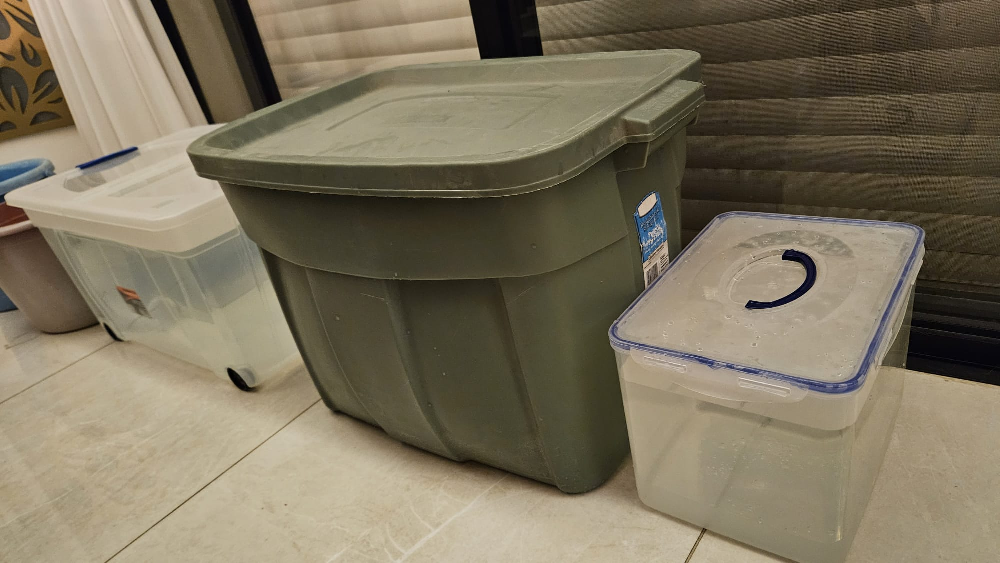
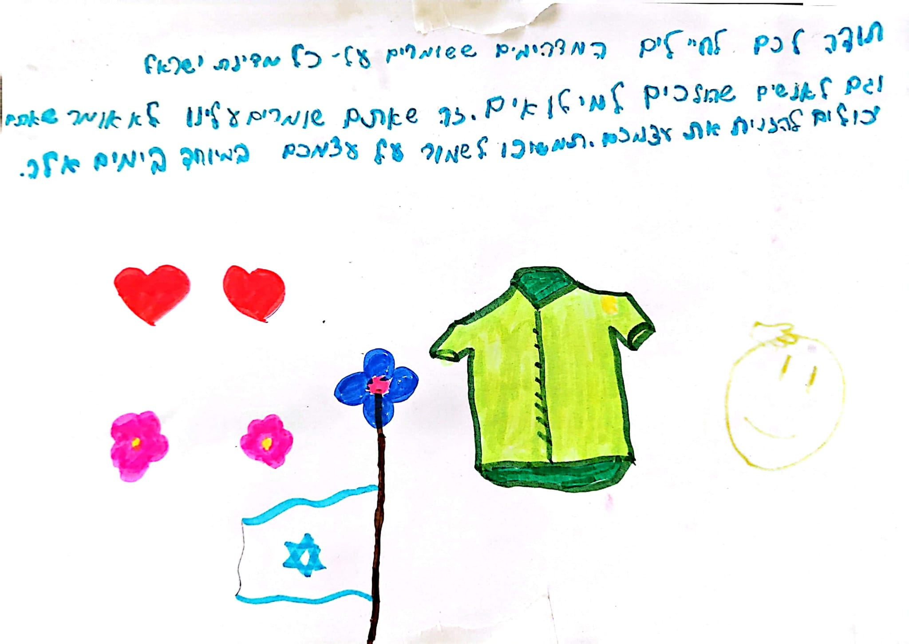
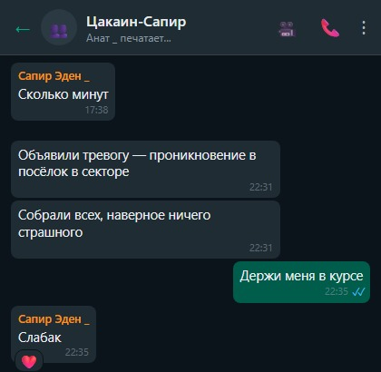
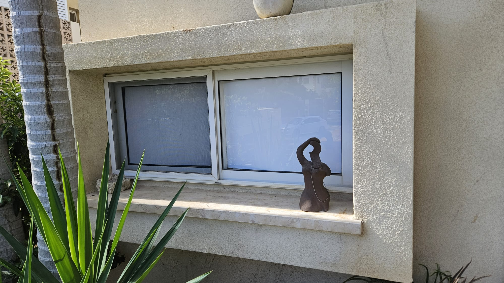
День 3-й войны
Каждые несколько часов я делаю чекин с Иданом. И с Сапир.
Сапир рассказывает, что всех кадровых солдат отправили на юг.
Их охраняют двое резервистов.
Ну вот. Теперь я успокоился...
Сапир не может связаться с подругой из курса наблюдательниц, из дивизии Газы.
Анат и я уже знаем, что с ней случилось. Но не хотим рассказывать.
Сапир даёт нам имя и умоляет выяснить, что с ней произошло.
Сапир не знает ровным счётом ничего о судьбе наблюдательниц.
У нас разрывается сердце. И мы не рассказываем ей, что её подруга попала в плен ХАМАСа.
Бесконечные очереди на сдачу крови. Согревает сердце. Эден тоже стоит в очереди, чтобы сдать.
Еду на заправку запастись ещё водой. И ещё сухой едой.
Готовлю деревянный брус для бомбоубежища, чтобы нельзя было открыть дверь снаружи.
Дети не понимают, зачем это.
Я предпочитаю, чтобы они и дальше не понимали.
Но меня не устраивает этот брус. Он ненадёжный.
Сегодня сирена застала меня посреди сета. Прервала тренировку. Это уже перебор.
Моя кузина Стейси из Филадельфии выходит на связь и требует новостей. Что происходит в Израиле? Как далеко мы от «граунд зиро»?
Я создаю семейный групповой чат в WhatsApp с ней и скидываю ей обновления.
Она просто в шоке. Приглашает всех нас к себе. Есть место.
Анат и дети спят в бомбоубежище.
Сегодня было две сирены.
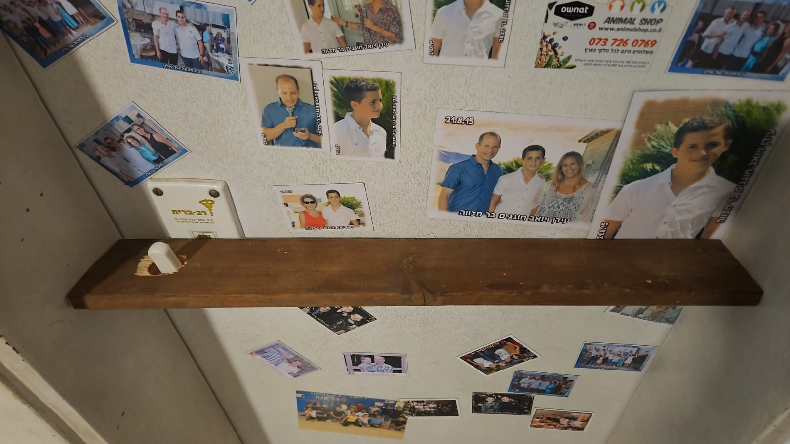
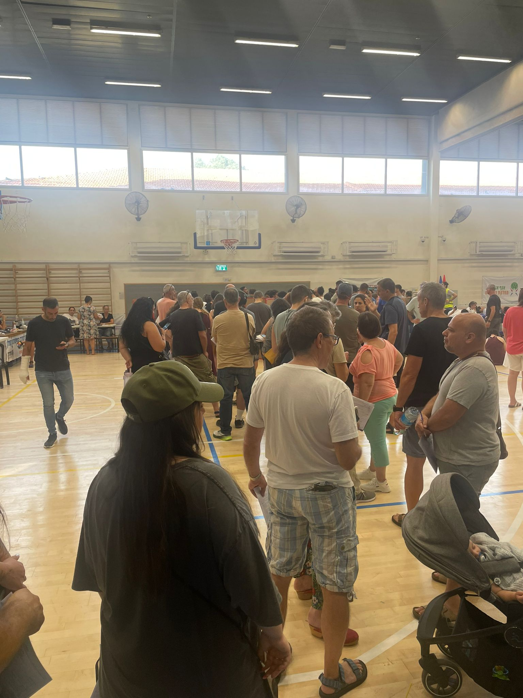
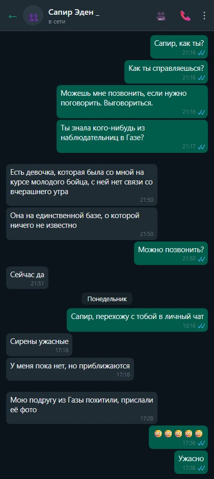
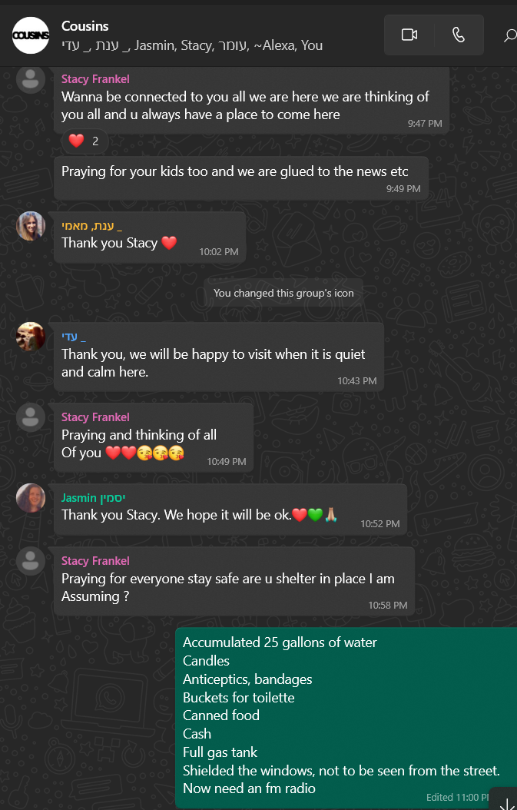
День 4-й войны
Идан приехал сегодня домой — вернуть машину, сменить трусы и убежать обратно в часть. Провёл дома десять минут.
Он говорит, что не понимает, как мы просто сидим дома и ждём, пока всё рассосётся. Как мы не участвуем. Не помогаем военным усилиям, ничего не делаем, не воюем.
Просто сидим дома и ждём хороших времён. Он за клавиатурой 19 часов в сутки. 20, может. Уже неделю. Воюет. Он окружён людьми дела 24 часа в сутки.
Вдруг приезжает домой и видит людей, пялящихся в стены.
То есть он понимает, что мы гражданские и от нас никто не ждёт, но он в режиме 180% CPU уже неделю, и вдруг видит двух своих зомби-родителей дома, и это режет глаз. Контраст.
Я рассказываю Идану, что хотел приготовить 100 горячих порций и привезти Сапир в её часть. Но она сказала, что в столовой хватает еды.
Я задумался над тем, что сказал Идан, и решаю пойти волонтёром — помочь фермерам, получившим повестку.
Не хватает рабочих рук в сельском хозяйстве. Урожай не собирается с полей. Сердце болит. Это хорошая еда. Которая пропадает.
Я бы хотел помочь там, где действительно нужно. В поселениях рядом с Газой. Но Анат накладывает вето.
Выхожу на «Лекет Исраэль» и договариваюсь на завтра.
Сапир получает фотографию подруги, закованной в кандалы в плену ХАМАСа. У нас разрывается сердце — вот так она узнаёт о своей подруге.
Галит, подруга ещё с начальной школы, звонит сегодня сообщить, что Асаф, одноклассник, получил известие: его дочь, солдат, застрелена во сне в дивизии Газы.
Асаф Громан раздавлен. В ноль.
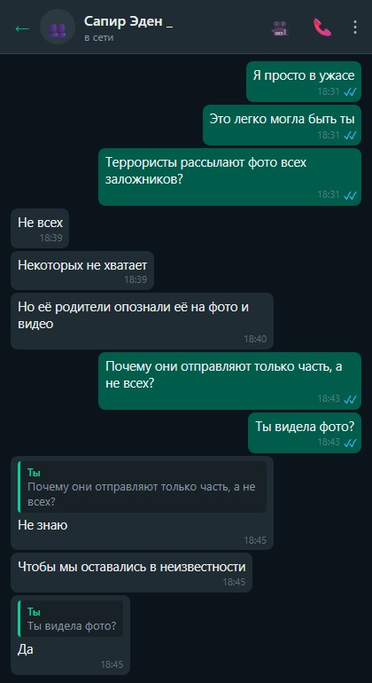
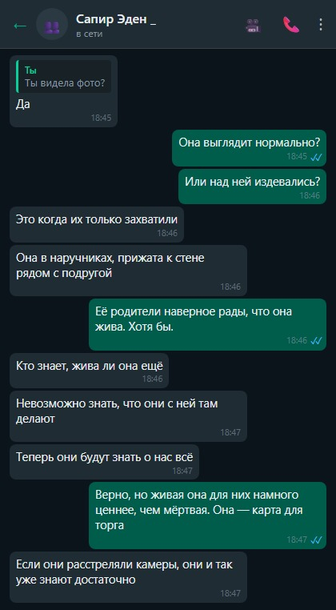
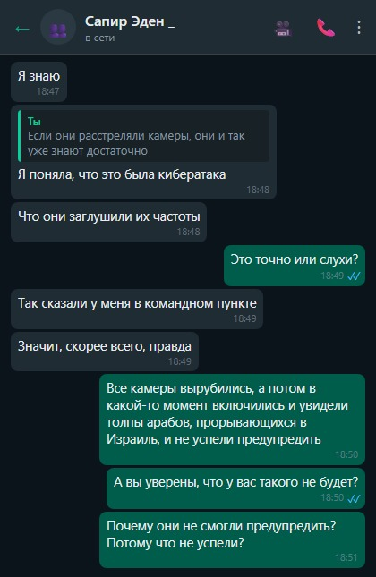
Ноа Марциано, похищенная подруга Сапир, удерживается в тоннелях ХАМАСа.
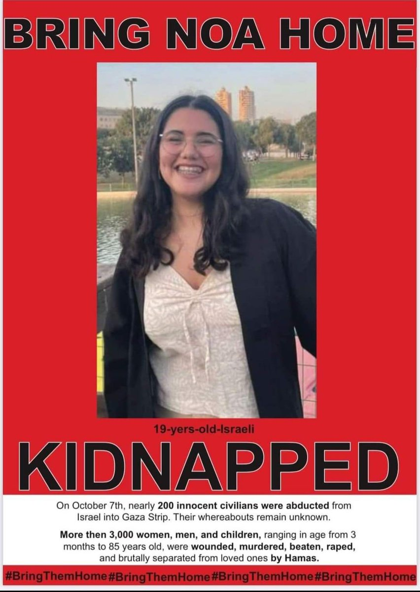
Галит прячется под прикрытием разделительного ограждения на шоссе во время сирены.
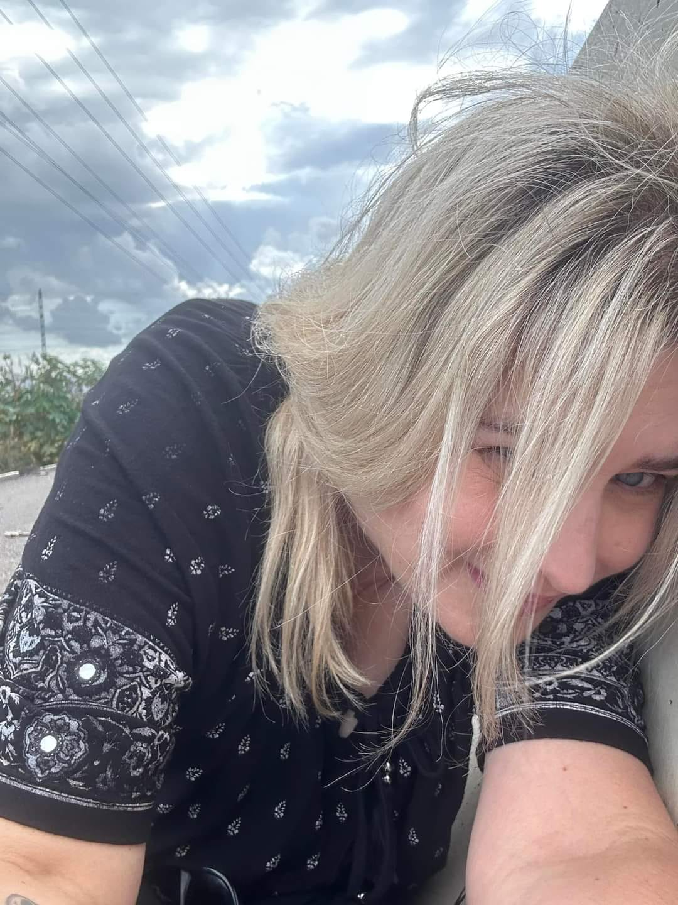
День 5-й войны
Выхожу рано утром за покупками.
Полки в супермаркете почти пустые.
Нет доставок, нет работников в магазине, нет товара — только кассиры.
Полки пустые. Как в Восточной Европе во времена коммунизма.
Днём кто-то из соседей позвонил в полицию — подозрительный мужик ходит за районом, по дюнам, с большим рюкзаком.
Когда я выхожу на тренировку по ракингу (большой рюкзак весом 30 кг, ходьба по песчаным холмам рядом с домом), полицейский патруль тормозит меня, просят документы. Отпускают сразу, конечно. Но видно, что люди на нервах.
Когда я рассказываю Сапир об этом инциденте, она катается от смеха.
Рад, что смог её рассмешить.
Анат распечатывает мандалы и раскрашивает с детьми.
Говорю боссу, что мне тяжело, что на работе я не в форме. Он принимает с полным пониманием.
Сапир рассказывает нам, что девушки в командном пункте решили соблюдать субботу в память и в честь наблюдательниц, которых убили и похитили.
Чтобы мы не пытались до неё дозвониться в субботу, потому что телефон будет выключен. Они соблюдают.
Только этого мне не хватало. Чтобы Сапир ударилась в религию.
Представляю, как я иду в магазин «Ошер Ад» покупать одноразовую посуду, потому что иначе Сапир откажется сидеть с нами за субботним столом.
Только этого мне не хватало!!!
Сапир успокаивает меня и говорит, что это разовая акция.
Не-а, не успокоился. Каждый, кто вернулся к вере, начинает с разового.
Я задумался о приложении.
Вместо того чтобы опрашивать всех, всё ли в порядке, после ракетной сирены.
Я регистрируюсь,
отмечаю, о ком хочу знать, что он в порядке.
После сирены — отмечаю, что я в порядке.
И тогда вижу, кто из друзей/семьи в порядке, а кто не ответил.
Будет красивая матрица, которая постепенно асинхронно заполняется зелёным.
А через 5 минут получим уведомление, кто не ответил.
Простейший pub-sub.
(Приложение также определит, у кого низкий заряд батареи или нет связи, и поэтому не ответил. И каждый пользователь должен будет одобрить своих наблюдателей. Приватность.)
Я думал об этом 15 лет назад, во время терактов.
Но сейчас это актуальнее.
Один рабочий день, чтобы это поднять.
Будет хит.
React, AWS.
Друзья в восторге от идеи. Анат — не очень.
Сегодня было две сирены.
Анат и дети спят в бомбоубежище.
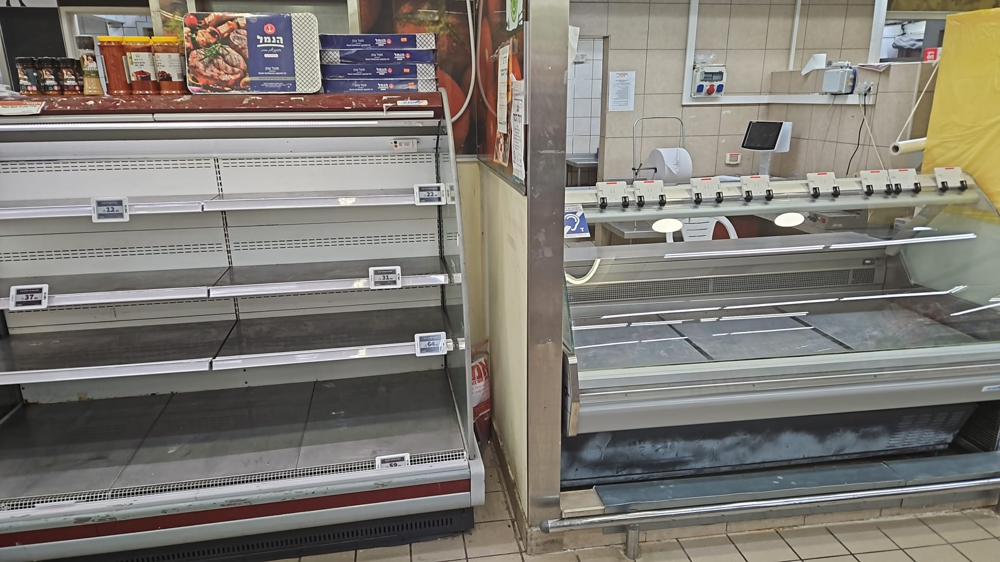
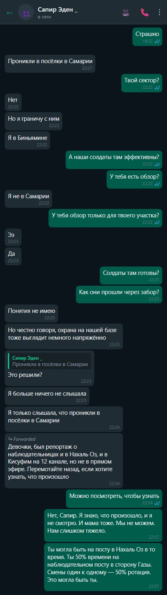
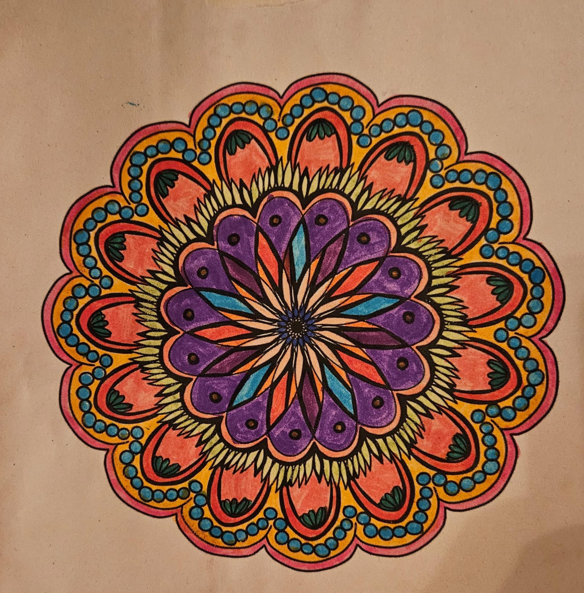
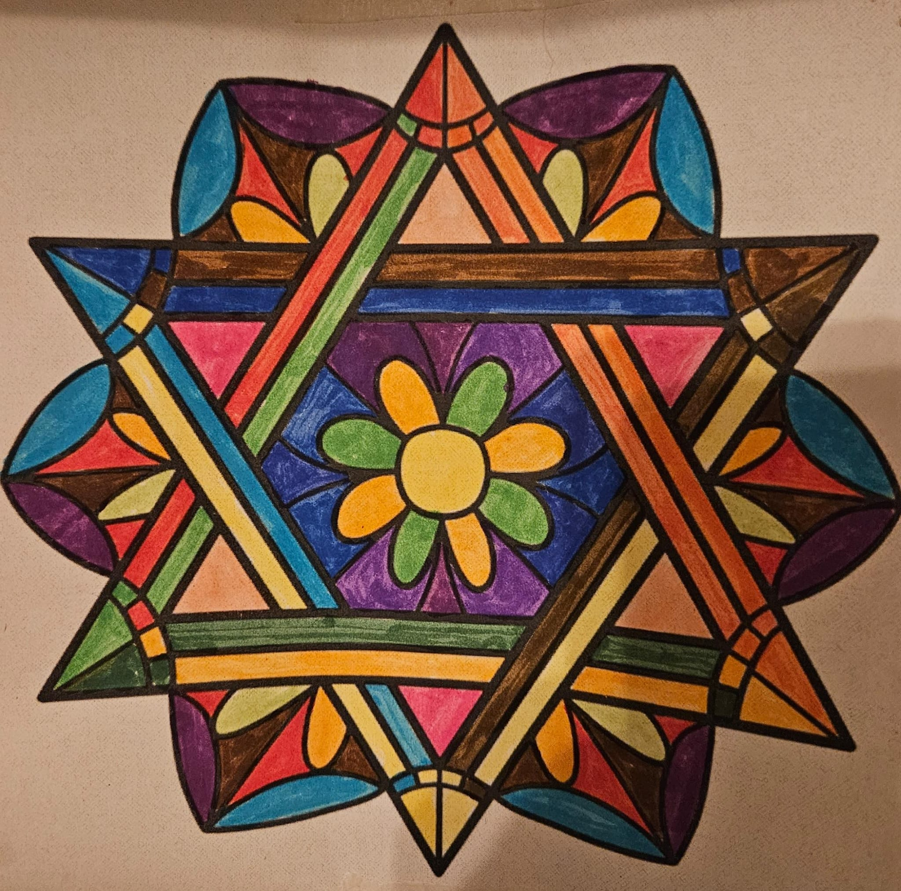
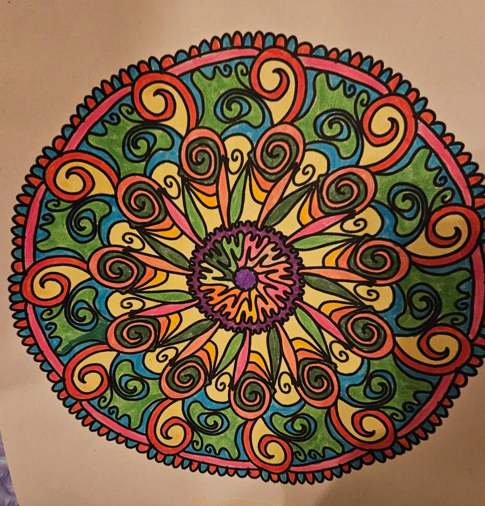
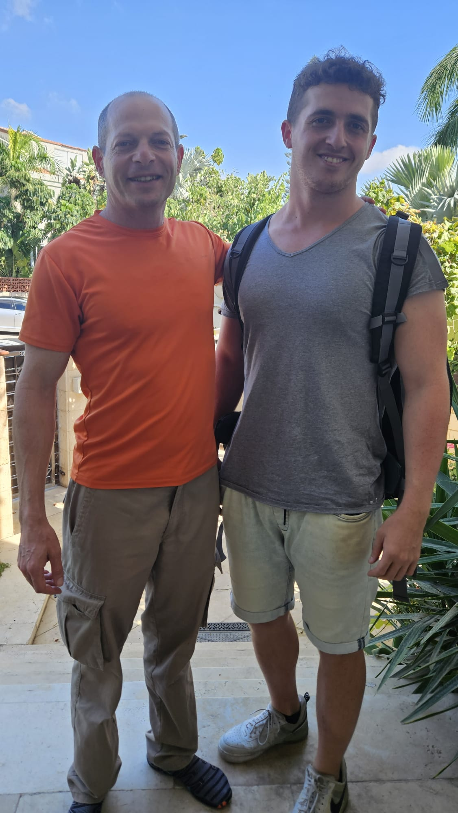
День 6-й войны
Просыпаюсь в 3 часа ночи. Не могу заснуть. Бессонница.
Переписываюсь с другом Бар-Элем.
Он спрашивает, включу ли я наши переписки в свой военный дневник.
Ну вот, пожалуйста. Включаю.
Бар-Эль патрулирует свой посёлок с оружием. Поэтому он доступен в 3 часа ночи.
Я спрашиваю его, как получается, что восточные евреи такие тёплые, любящие, сердечные, а арабы — такие злые и жестокие.
Ему долго отвечать, и я начинаю бояться, что он обиделся, что я сравниваю восточных евреев с арабами.
Но я-то имел в виду комплимент.
Бар-Эль рассказывает о представлении на Лаг ба-Омер, врезавшемся ему в память с детства, на котором молодой араб издевался над голубями, поджигал их, втыкал в них петарды.
Жестокие они, арабы.
Бар-Эль шлёт фотографию прямо сейчас. С ночного патруля.
А я ему — побрейся срочно, а то погранцы примут за своего.
Я вступаю в форум «Братья по хозяйству». Ищу возможности волонтёрства в сельском хозяйстве. Спрашивают, могу ли я помочь с дойкой.
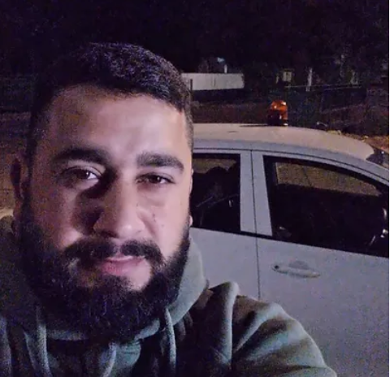
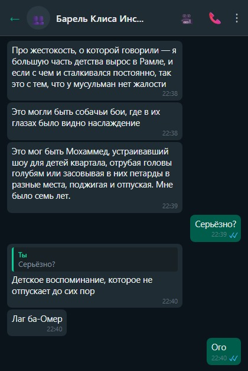
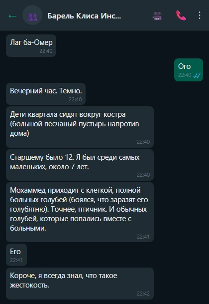
Вступаю в форум «Братья по хозяйству».
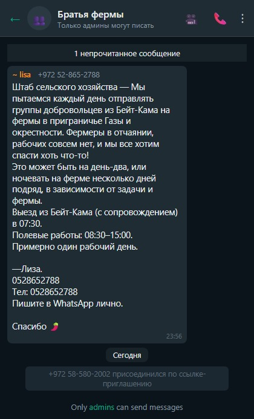
День 7-й войны
07:00 — Ади (моя сестра) звонит.
По времени звонка я понимаю — что-то случилось.
Ади, дрожащим голосом, рассказывает, что её дочь Май, которая полтора года живёт в Австралии, решила вернуться в Израиль, воевать. Её база, где она прослужила два года и восемь месяцев на срочной, — уничтожена. (Бригада Газы.) И она не может стоять в стороне и быть пассивной.
Ади в ужасе. Пытается отговорить её.
Но Май решила.
Папа звонит. Мы разговариваем.
Папа: «Как мы ничему не научились из войны Судного дня».
Я: Могу тебе пообещать, что война Судного дня случится в третий раз и с внуками, через 50 лет. Невозможно герметично удерживать линию границы 200 лет. Вещи случаются. И будут случаться.
Папа: Мне нужно заменить министра образования. Дети Израиля не знают историю. Как это мои внуки не знают историю? И почему мои дети не знают ничего, что произошло до 2000 года.
Я: Раздражаюсь, неохота получать по голове от того, кто собирается заменить министра образования, и вешаю трубку.
Говорят, что собаки выработали условный рефлекс на сирену и бегут первыми в бомбоубежище при звуке сирены.
Только наш Шуки глух на оба уха и никуда не торопится.
Сегодня было две сирены.
Анат и Лиор спят в бомбоубежище.
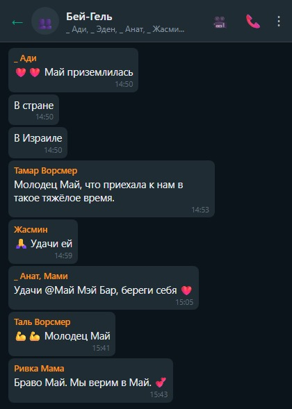
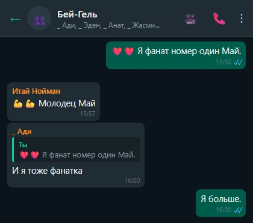
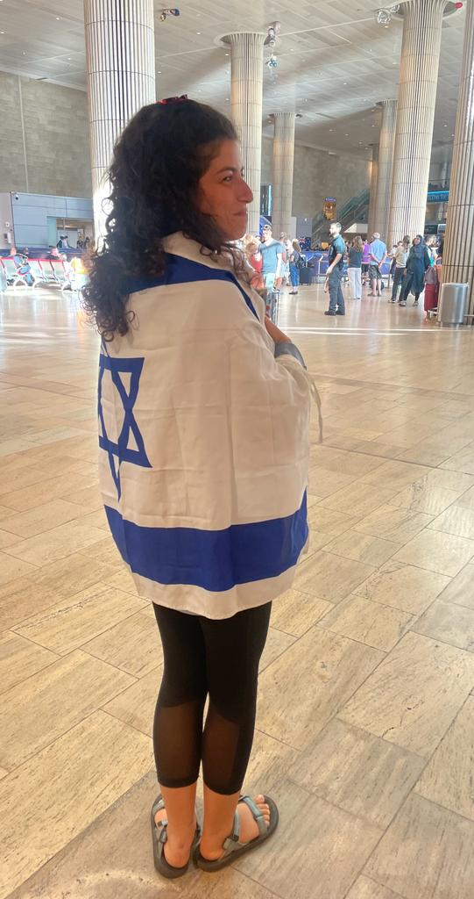
День 9-й войны
Ну, сегодня по-настоящему дождливо. Звоню в «Лекет Исраэль» и договариваюсь на завтра. Завтра — точно.
Я покупаю засов для двери бомбоубежища. Устанавливаю засов. Вместо спорного бруса. Показываю Лиору, как ставить заклёпки. Объясняю ему разницу между сверлом по бетону и сверлом по металлу.
Дети учатся дистанционно сегодня. По Zoom.
Анат играет кучу настольных и карточных игр с детьми каждый день.
Ей это тоже очень нравится. Компенсация за все годы, когда она отказывалась играть в игры.
Дети подсаживаются на игры с Анат.
Май мобилизуется.
Сегодня две сирены.
Анат спит с Лиором в бомбоубежище.
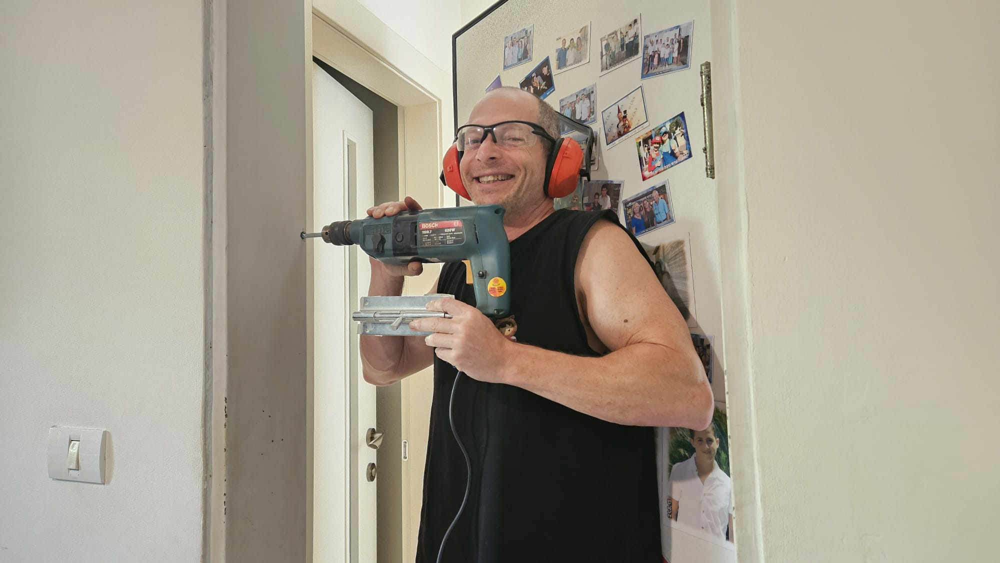
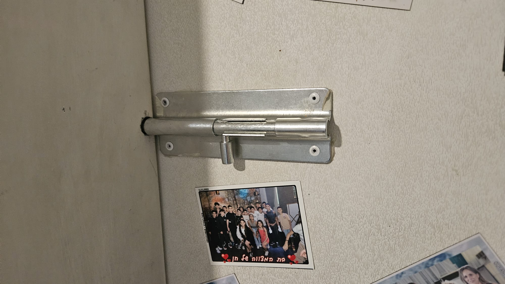
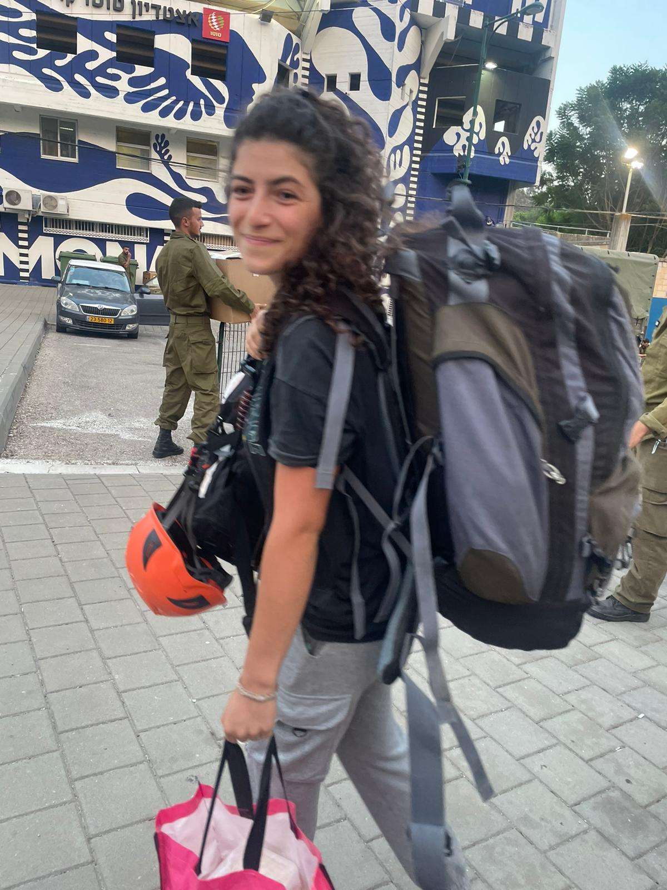
День 10-й войны
Сегодня тот день, когда я фермер на один день.
Я иду помогать в сельском хозяйстве.
Огромное поле в Ришон ле-Ционе. Собираем кольраби.
Волонтёров — куча. Со всей страны. Всех возрастов. Греет сердце — видеть такой дух добровольчества в народе.
Нас просят срывать кольраби, отрезать корни и листья, наполнять ведро, а когда оно полное — заполнять большой контейнер.
Через три часа все устали. Но довольны.
Я возвращаюсь домой и пытаюсь развлечь Лиора. Мы наполняем большую миску водой и кучей льда.
Окунаем голову в миску. У этого масса полезных свойств. Активирует парасимпатическую нервную систему, высвобождает эндорфины, укрепляет иммунитет.
Оказывается, по бокам головы есть холодовые рецепторы. Поэтому погружение головы в ледяную воду — почти как ледяная ванна для всего тела.
Оба получаем brain freeze.
Мы также делаем челлендж dead-hang на турнике. Висеть 100 секунд.
Я вытягиваю 100 секунд. Еле-еле. Лиор выдерживает минуту. Что весьма впечатляет.
Анат готовит с детьми борекас с сыром и картофелем.
Я хочу приготовить шоколадные шарики с Лиором, но у нас нет печенья «Пти-Бер».
Ещё одно сообщение от Сапир, разрывающее сердце.
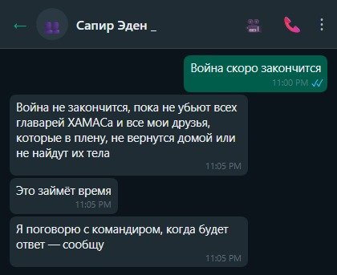
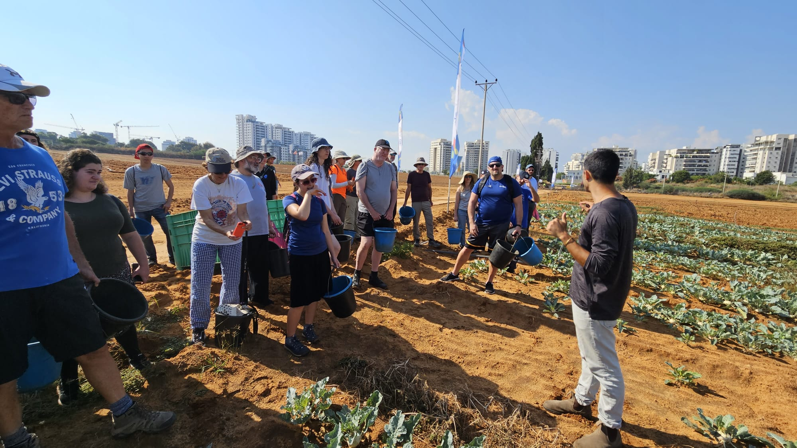
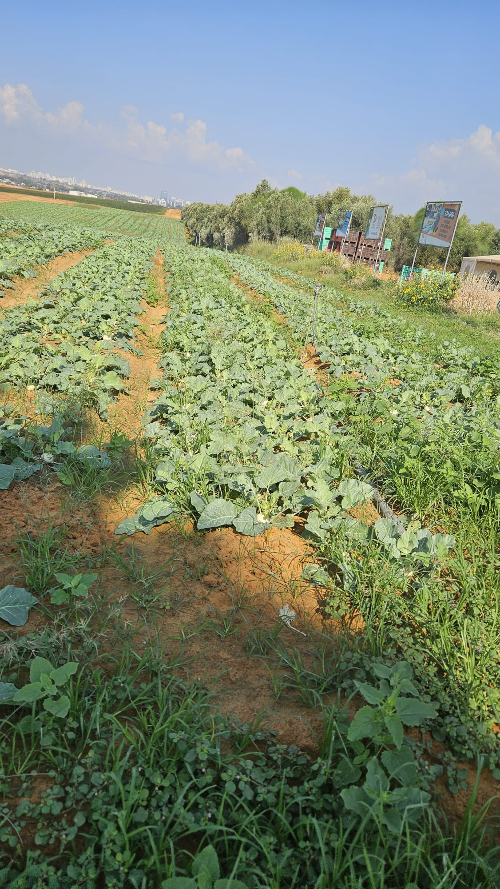
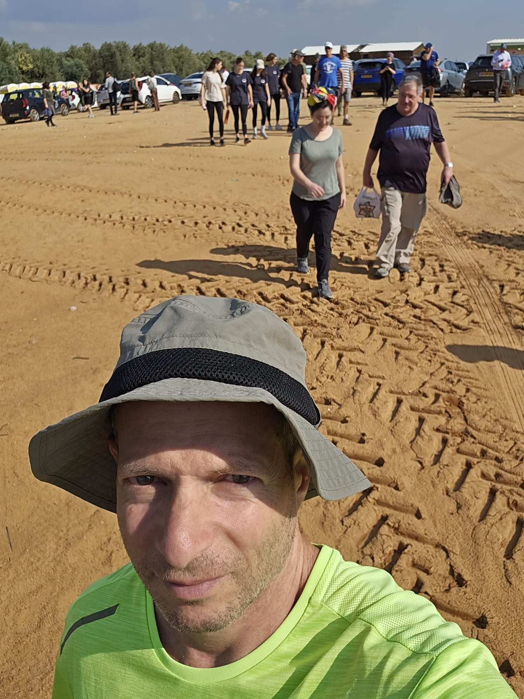
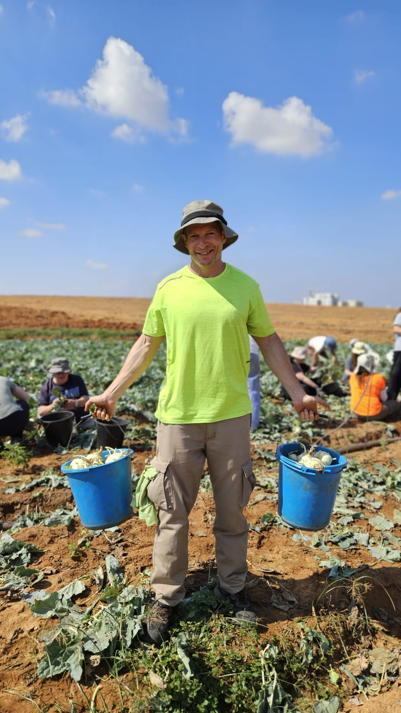
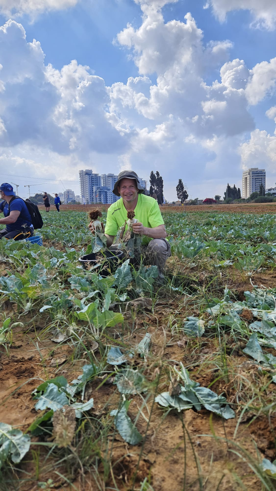
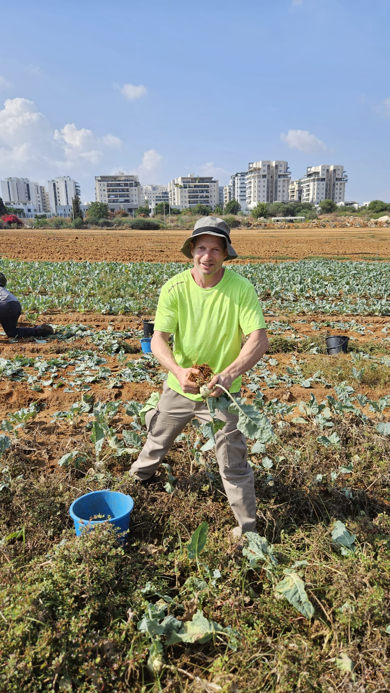
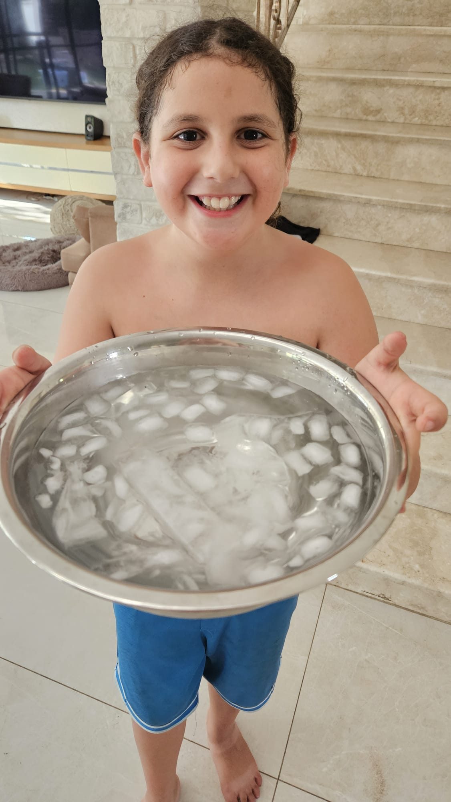
День 11-й войны
Лиор отправляет меня в свою школу забрать книги и тетради, которые он оставил там до войны.
Школа заброшенная и пустая. Как во время коронавируса.
Я покупаю «Пти-Бер». Сегодня приготовим шоколадные шарики вместе.
Мой друг Гури узнаёт, что террористы, прорвавшиеся в Израиль 11 дней назад, были под наркотиками.
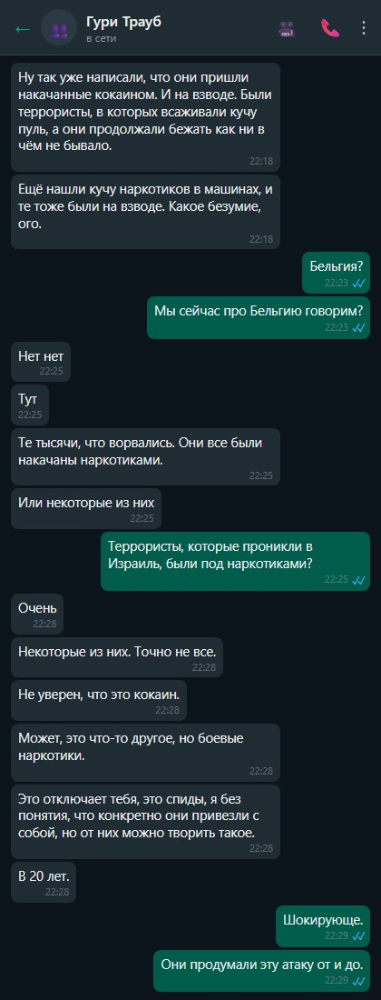
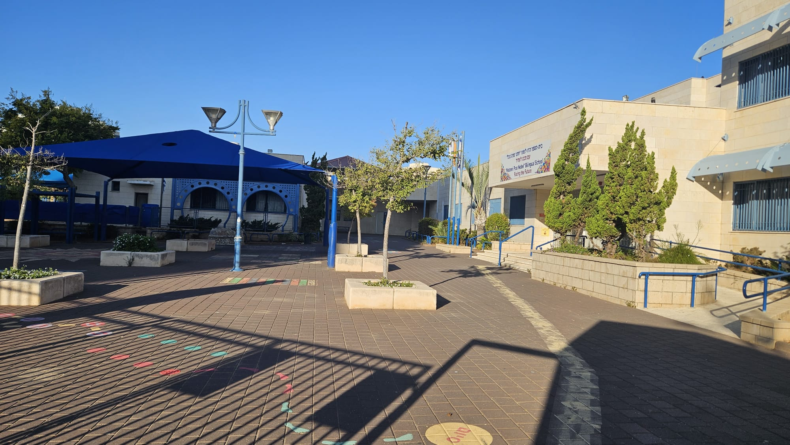
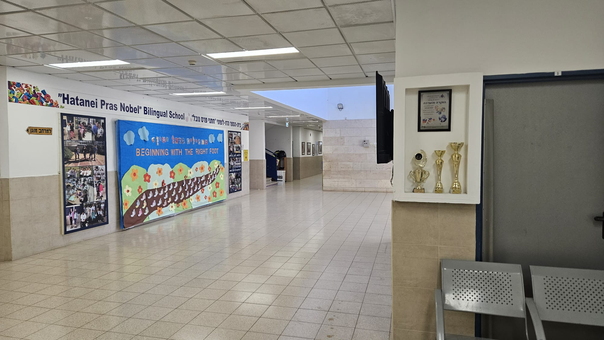
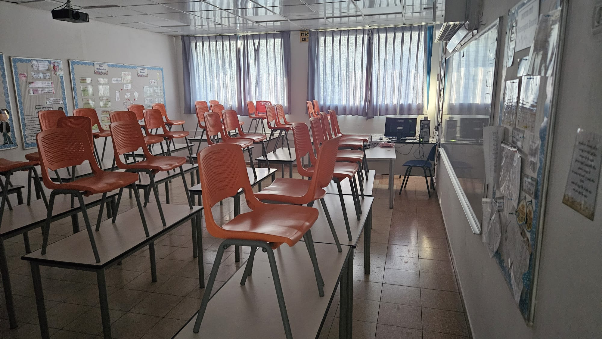
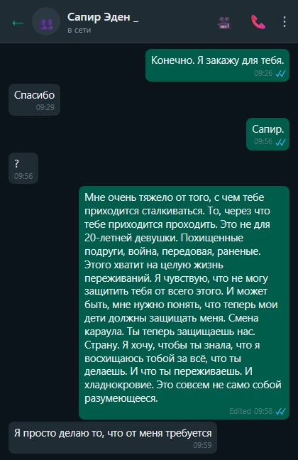
День 12-й войны
Террористическая организация ХАМАС объявила сегодня, что высокопоставленный член военного крыла Айман Нофаль ликвидирован ЦАХАЛом в центре сектора Газа — наиболее значимая ликвидация на сегодняшний день. Он отвечал за координацию между различными батальонами террористических организаций в секторе.
Сегодня мы получили 7 сирен. Ликвидация Аймана это объясняет.
Ночью у Лиора случился приступ тревоги. Дрожь, поверхностное дыхание.
Анат делает с ним дыхательные упражнения.
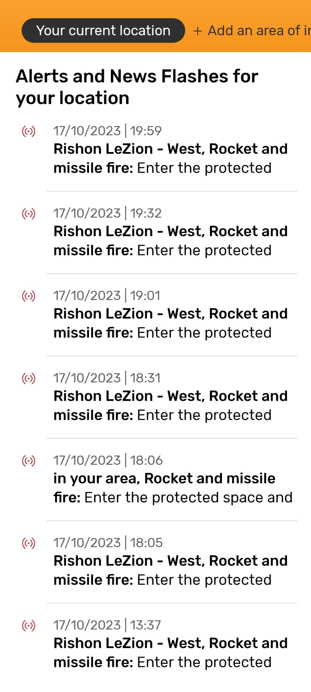
Я наткнулся на видео с камеры видеонаблюдения кибуца Беэри. Видно, как туда хлынули толпы мусульман.
Это выглядело как площадь в Газе. Боевики, дети, старики, инвалиды, подростки. Всё подряд.
Это было как школьная экскурсия. Каждый входит и пересекает границу в Израиль, берёт с собой еврейчика на сувенир, чтобы привязать в гостиной, и возвращается в Газу после издевательств над местными жителями.
День 13-й войны. Шуки учится бежать с нами в бомбоубежище.
Мы не уверены, триггер — сирена или то, что он видит, как мы все в панике бежим в укрытие.
Решаем проверить.
Отсчитываем 3... 2... 1... и бежим вместе в убежище.
Шуки мчится с нами.
Всё ясно. Собака глухая.
... Оказывается, несколько десятков террористов ХАМАСа бродят по стране.
Израильские арабы дают им еду. И укрытие.
Если что-то и может напрягать... то это оно.
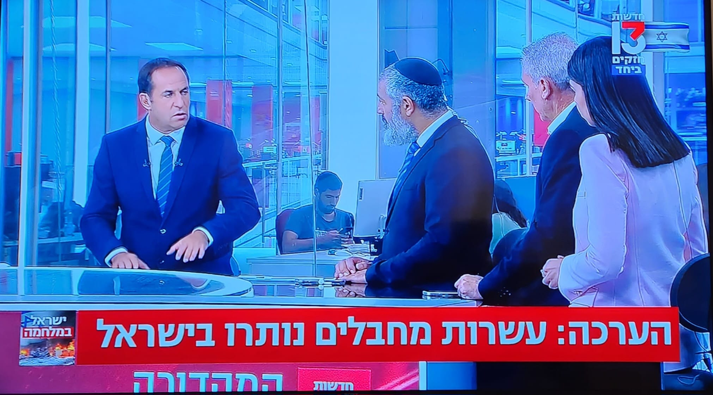
Каждые несколько месяцев эта сцена преследует меня во сне. Я каким-то образом в конце сна оказываюсь убегающим от вооружённых террористов.
Но сейчас это реальность.
И есть свидетельства людей, которые часами боролись за ручку бомбоубежища с решительными террористами по ту сторону двери.
И в свете всего этого, и стресса, который снова нарастает у меня после затишья на прошлой неделе, я решаю усилить засовы в бомбоубежище.
У меня один засов, и я хочу установить ещё три.
Это даст мне немного душевного покоя.
Я иду в местный хозяйственный магазин, но все засовы раскуплены. Иду в «Эйс» — засовы недостаточно массивные.
«Хоум Депо»... тоже.
В итоге я советуюсь с Бар-Элем, другом Бар-Элем, который приносит мне нормальные засовы, и вместе мы их устанавливаем.
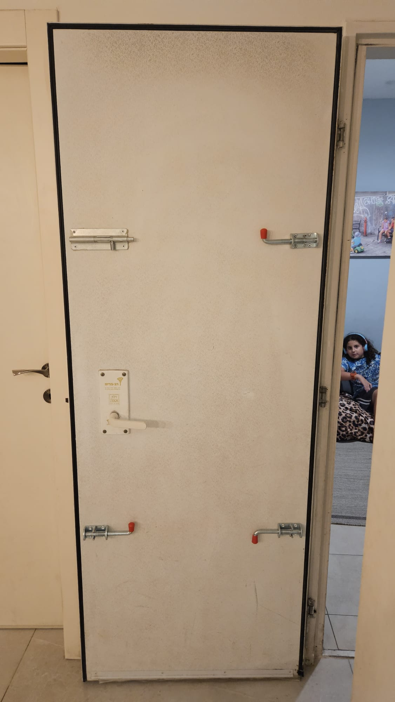
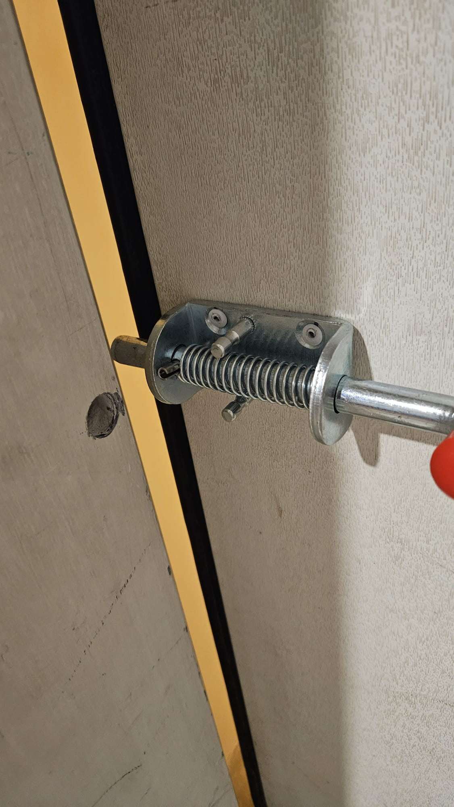
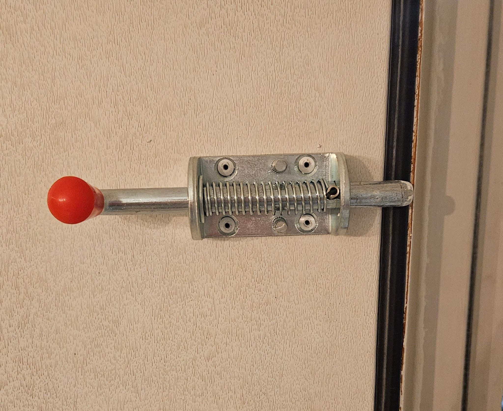
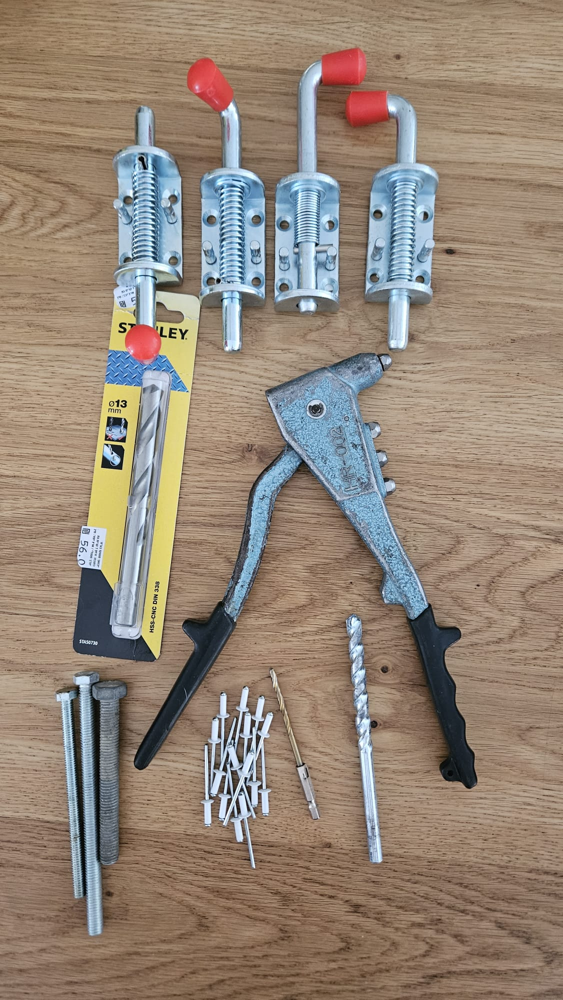
День 14-й войны
Думаю получить лицензию на оружие.
Безумные времена. Никогда в жизни не думал получать разрешение на ношение оружия.
К сожалению, я не соответствую требованиям. Я стрелок 02. Критерий — 03. Или населённый пункт на линии столкновения.
Я утешаюсь тем, что Ришон ле-Цион через полторы недели станет городом на линии фронта. И тогда побегу получать лицензию.
У Сапир есть укулеле. Она поднимает боевой дух солдат в части своей укулеле.
Сапир рассказывает, что им приказали морально подготовиться к 60 дням на базе.
Не очень понимаю, как к такому вообще можно подготовиться.
Ходят слухи, что израильские арабы бродят по городам. И в Тель-Авиве тоже. И фотографируют дома.
Десятки постов об этом в Facebook.
Шекель теряет в цене.
День 15-й войны
Сегодня праздничный день в нашем доме.
Идан приезжает на 24 часа отдыха.
Я встречаю его на железнодорожной станции.
Огромная радость. Наконец-то блудный сын вернулся домой.
Идан делится своими злоключениями в части.
Такие переживания, я уверен, он не испытает больше нигде. Никогда.
Устраиваем пятничный ужин в честь Идана.
Сапир нам не хватает.
Сегодня из Йемена выпустили 3 ракеты в сторону Израиля. Фронт определённо расширяется.
Пуск трёх ракет и 15 БПЛА хуситами в сторону Израиля и их перехват американским кораблём — это реализация угроз и обещаний последней недели. Вместе с тем обстрел увеличивает вероятность того, что и «Хезболла» вступит в войну | Комментарий
На 13-й день войны в неё вошли Иран и США. В Тегеране почти буквально реализовали свои угрозы расширить войну на другие арены, а американцы реализовали своё обещание помогать Израилю и оперативно, если потребуется — не солдатами на земле, а перехватом ракет и БПЛА, запускаемых иранскими прокси из районов, не прилегающих к границам Израиля.
Американские солдаты не будут воевать на земле в Израиле и за него, но США помогут справляться с ракетными залпами с дальних флангов радикальной шиитской оси.
День 16-й войны
Утром мы получили сирену в 09:00. Это нетипично.
Похоже, ЦАХАЛ взял под контроль север сектора, и они могут стрелять только с юга.
Мы — новый Тель-Авив. Похоже, до Тель-Авива уже не добить. Мы — самая северная цель.
Наша уборщица говорит, что мы слишком нервничаем, потому что есть уйма времени добежать до укрытия.
Лиор просит присоединиться к моим тренировкам во дворе.
Включаем его любимый плейлист и тренируемся вместе. Сегодня — руки.
Стейк и лобстер. На палубе авианосца «Джеральд Форд» в Средиземном море вчера вечером подали стейк и лобстер. Моряки знают, что такое блюдо подают на праздники — или для поднятия морального духа перед выходом на операцию.
Лиор проснулся ночью от кошмара.
Во сне он ест печенье. Печенье из гранолы, которое приготовил с мамой и с Итай. Во сне раздаётся сирена. Специальная сирена, которая даёт только полминуты на бомбоубежище, а не полторы. Лиор мчится в убежище с печеньем во рту. От стресса Лиор давится сухим печеньем. Папа (я) делает ему приём Хеймлиха, спасает его, и печенье вылетает из горла. Мама видит целое печенье, вылетающее из горла Лиора, и падает в обморок. И тут я проснулся.
День 17-й войны
Просыпаюсь в 02:00 и не могу заснуть снова.
Все мои красные линии пересечены.
Не хочу больше здесь жить.
Мы пытались. Честное слово, пытались.
Записываю Сапир на приём для продления американского паспорта в американском консульстве на улице Ха-Яркон.
Сегодня счастливый день.
Сапирка приезжает домой на отдых.
Маленькие радости жизни.
Сапир приезжает в 14:00. И должна уже завтра к 07:00 уехать обратно на базу.
Я везу её за покупками. Докупить снаряжение. Термобельё, куртку, носки. «Рикошет» даёт нам купон.
Жирный купон.
Сапир рассказывает байки.
Не похоже, что она изменилась.
Поведение вполне нормальное.
Никакого ПТСР.
Хотя она рассказывает о заместительнице командира из учебки, которую убили, и о подругах-наблюдательницах, убитых или похищенных.
Но, похоже, это проскальзывает мимо, не задевая.
Верю, что всё всплывёт через годы.
День — я перестаю считать...
IQ населения распределён со средним 100 и стандартным отклонением 15.
В Газе среднее — 85, с тем же стандартным отклонением.
То есть из 2 миллионов жителей Газы есть 120 человек с IQ 145, которые считаются гениями.
Мне реально страшно из-за наземной операции. Уверен, что нас там ждут сюрпризы, которые наша поехавшая разведка не способна предвидеть.
120 газанских гениев наверняка заготовили нам ловушки.
День за днём.
Отчаяние нарастает с каждым днём.
И мне надоело обновлять дневник.
Анат и Лиор всё ещё спят в бомбоубежище.
31 октября, 20-й день войны
Просыпаюсь утром 31 октября. Протираю глаза и спускаюсь вниз, в гостиную.
Вижу гирлянду из шариков, висящую в гостиной.
И совершенно не понимаю, при чём тут это.
А, блин. Сегодня же мой день рождения.
Забыл.
Был приятно удивлён.
Приятно получить внимание.
В честь дня рождения решаю выйти на трейл.
Анат предупреждает, что на открытой местности ракеты не перехватывают.
Я игнорирую.
Мне моя вменяемость важнее.
Днём, после рабочего совещания, Лиор зовёт меня на кухню. Прихожу, и мне поют «С днём рождения», и есть торт.
Поскольку только я хожу за покупками уже месяц, даже не подозревая зачем, я купил то, что было в списке: печенье и сыр для чизкейка.
Меня провели.
После обеда я еду в «Декатлон», покупаю красную боксёрскую грушу, вешаю во дворе, пишу на ней «ХАМАС» чёрным маркером.
Теперь дети выплёскивают кучу агрессии на ХАМАС. Все эмоции последнего месяца, все сирены, вся фрустрация. Всё выходит кулаками.
Это отличная штука. Огромное удовлетворение — бить ХАМАС. Терапевтично.
30-й день войны
Сапир приезжает домой на полтора дня. Впервые она выходит из командного пункта на такое долгое время.
Мы снова чувствуем себя целыми.
Сапир выглядит хорошо. Выглядит по-настоящему сильной. Невыносимые события почти не повлияли на неё.
Я доволен.
Очень.
Я беру её и младших поесть мороженое. В «Андри».
Анат любит эту фотографию. Патриотичная. Форма и флаг.
Идан присылает мне сообщение в WhatsApp.
С чего вдруг?
Почему опять откат ко второму дню войны?
Я снова вхожу в режим полной готовности, меняю воду в бомбоубежище. Пополняю запасы.
Меня снова накрывает. Плохо сплю ночью.
С чего Идан вдруг с этой хренью?
Пытаюсь вытянуть побольше деталей. Но Идан — бункер.
Ни слова.
И вот ещё одна новость, напоминающая мне войну Судного дня:
На фоне войны с ХАМАСом Иордания объявила, что отзовет своего посла в Израиле на консультации.
Лидер хуситов с угрозами Израилю. Абдель Малик аль-Хути, лидер повстанцев в Йемене, поддерживаемых Ираном, заявил, что «йеменский народ не будет колебаться в объявлении джихада против Израиля».
Сегодня хуситы, повстанцы из Йемена, осуществили пуски ракет в сторону Красного моря.
Спичка, зажжённая в Йемене, может заставить Саудовскую Аравию и США слезть с забора.
Нет сомнений, что фронт расширяется.
Кто вообще слышал об этих хуситах до сегодняшнего дня? Откуда это? Йемен? Это вообще настоящая страна?
Впервые вблизи Ближнего Востока: самый большой и дорогой корабль в мире. 90 летательных аппаратов, 4 300 членов экипажа и вооружённые подводные лодки: США приближают к берегам Израиля авианосцы в демонстрации поддержки в войне против ХАМАСа. Авианосец «Форд», крупнейший и самый дорогой корабль в мире, уже размещён в Средиземном море, а на следующей неделе ожидается прибытие «Эйзенхауэра».
Американская компания Salesforce предоставляет своим израильским сотрудникам военный бонус. Сотрудники компании получат единовременный грант в размере 10 000 шекелей к зарплате за ноябрь.
Приятно знать, что нас видят. Что о нас думают.
Анат не дотягивается до окна бомбоубежища, чтобы его закрыть. Поэтому я устанавливаю бельевой шнур с блоком, чтобы было проще закрывать окно.
Анат не особо впечатлена.
Лиор говорит, что хочет присоединиться к моим тренировкам.
Одна хорошая вещь выходит из проклятой войны.
Лиор присоединяется ко мне, и мы тренируемся вместе.
У Лиора хорошее тело. Крепкое. Если он чуть вложится и будет тренироваться, станет машиной.
На этой неделе я наконец-то еду в офис в Тель-Авив.
Немного здравомыслия.
Немного спортзала с людьми, у которых есть пульс.
Мне очень приятно встречаться с людьми.
Разговоры в коридоре.
Очень по ним скучал.
По дороге обратно впервые вижу билборды с фотографиями заложников.
Потрясающе.
На работе дают возможность поговорить с психологом — о трудностях, кризисах, тревогах.
Анат и я подключаемся по Zoom к Кеми, терапевту.
Она реально в теме. Во время разговора мы постепенно решаем выйти из бомбоубежища, выйти из дома; может, дети пойдут в скауты, к друзьям, в школу. Кеми нам очень помогла.
Не думал, что одна встреча по Zoom может столько дать.
Мама Анат приезжает на короткий визит и пробует на вкус наше бомбоубежище.
Анат объявляет, что сегодня ночью спит в спальне, а Лиор — в своей комнате.
Волнение. После 30 дней сна в бомбоубежище.
В честь этого события мы получили две ночные сирены. Одну в 21:00. Вторую в 22:00.
Лиор заявляет, что спал прекрасно.
Он взял с Анат клятву, что если будет сирена, она разбудит его первым делом и не забудет о нём.
Мы на 3-м месте. После Сдерота.
Почётно.
Одед Храбрый приезжает в наш обстрелянный ракетами Ришон навестить меня.
Мы готовим вкусности на мангале и обсуждаем дела военные.
7 ноября. Месяц войны.
Лиор впервые за два месяца надевает школьную форму.
Школа.
Тыл начинает возвращаться к нормальной жизни.
Я еду в офис в Тель-Авив.
Рабочая рутина.
Вдруг по громкой связи объявляют минуту молчания в 11:00 в память о жертвах.
Стоим минуту молчания.
Что, прошёл только месяц? Клянусь, ощущение — полгода.
Нам раздают значки в память о заложниках и погибших.
Все в солидарности.
Пятая неделя войны — неделя Ноа
Среда, 14 ноября. День рождения Анат.
Наступил тот страшный день, которого мы боялись.
Утром Сапир присылает мне снафф-видео от ХАМАСа — якобы Ноа Марциано погибла от бомбёжек ЦАХАЛа.
Сапир боится смотреть видео и просит меня посмотреть и рассказать ей, что там.
После просмотра я сообщаю Сапир, что считаю всё это циничным фейком ХАМАСа. Явная подделка.
Примерно через два часа Анат прибегает ко мне в слезах. Узнала, что Ноа Марциано убита в плену ХАМАСа.
Случилось самое страшное.
Хороший день рождения мы устроили Анат.
Звоним Сапир на ватных ногах. Сообщаем ей ужасную новость.
Сапир рассказывает нам, что Ноа написала ей письмо в учебке и попросила не читать его до окончания учебки.
Сапир забыла об этом до сегодняшнего дня.
Вся семья теперь ищет маленький чёрный блокнот, в котором Ноа Марциано написала важное письмо Сапир.
Не находим :(
Анат и я весь день ходим как зомби.
Без желания делать что-либо.
Я лишь представляю, что сейчас переживает наша Сапирка.
Это очень тяжёлый день для меня. Для нас. Один из самых тяжёлых.
Поскольку тела нет, семья сидит шиву без похорон.
Мы договариваемся поехать с Сапир на утешение скорбящих в Модиин в четверг.
Видимо, марш семей заложников, направляющийся в Иерусалим, пройдёт через них как раз в четверг днём.
ХАМАС, террористическая организация, нанёс израильской сверхдержаве самый тяжёлый военный удар в её истории. Обманная операция была безупречной. Провал разведки был полным. Последствия были катастрофическими, и только масштаб унижения превзошёл масштаб провала. Израиль был на расстоянии вытянутой руки от исторического мирного соглашения с Саудовской Аравией, которое завершило бы мирный круг с суннитской осью, замкнуло палестинцев в чёрную коробку и выбросило бы её в море. Вместо этого они чуть не выбросили нас в море. Переход, который мы совершили в ту субботу 7 октября, — один из самых резких в истории. В одно мгновение израильская империя из самоуверенной, высокомерной, уверенной в себе сверхдержавы, которая наносит удары по Ирану, Сирии и всему между ними, которая раздаёт милости своей разведки всем ухажёрам, которая задаёт темп всему Ближнему Востоку и служит маяком технологий, мощи и разведки для всего мира, превратилась в потерпевший крушение корабль среди волн, нацию в экзистенциальной панике, граждан, пытающихся раздобыть себе пистолет или нож, чтобы спать с ними под подушкой ночью, даже если они живут в центре Тель-Авива.
Время замерзает. Каждый день ощущается как 7 октября.
Четверг
Сегодня мы поехали с Сапир в Модиин. В дом семьи Ноа Марциано. На утешение скорбящих.
Её мама — очень сильная женщина.
Очень.
Встречаем там женщину, пришедшую утешить. Рассказывает, что у неё две дочери. Одна — наблюдательница, заложница в Газе. Вторая — участвует в марше заложников.
Анат обнимает её в слезах.
Сказать особо нечего.
Установили траурный шатёр, где собрались десятки мужчин в кипах и раввинов, читают кадиш и обсуждают недельную главу Торы.
Меня раздражает вся эта история. «Укрепление в вере» в часы кризиса.
Мы поднимаемся в детскую комнату Ноа. Сапир перебирает её вещи, фотографирует переписку Ноа с её командиром.
Ситуация нелёгкая ни для кого.
В стороне стоят два больших синих ящика, украшенных израильским флагом — личные вещи Ноа, которые ЦАХАЛ отправил её родителям.
Разрывающее сердце.
Пятница
Просыпаемся утром в пятницу, и вот новость:
42-й день боевых действий | ЦАХАЛ вернул в Израиль тело военнослужащей Ноа Марциано, погибшей в плену ХАМАСа.
Значит, похороны всё-таки будут.
Тело обнаружено вчера вблизи больницы Шифа, через день после обнаружения тела Йехудит Вайс из кибуца Беэри. Трое палестинцев погибли в результате удара ЦАХАЛа в Дженине; силы окружили больницу в городе. Блинкен переговорил с Ганцем и с министрами иностранных дел Египта и Иордании и заявил, что США выступят против принудительного переселения палестинцев из Газы.
Сапир в пути из своей части, чтобы принять участие в похоронах.
Сапир едет в Модиин на похороны — отдать последнюю дань уважения.
Класс Лиора отправил солдатам открытки. Греет сердце. Солдаты довольны.
3-й месяц войны
78-й день войны.
Сегодня открыли улицу имени Ноа Марциано. Сапир поехала в Модиин на церемонию.
В городе Модиин есть традиция: каждый погибший солдат — уроженец города — получает улицу, названную в его честь.
Друга на этой неделе положили в Ихилов на срочную операцию.
Рассказывает, что каждые полтора часа вертолёты прилетают с юга на посадочную площадку больницы с тяжелоранеными.
Десятки, а может и больше, раненых поступают в день. Больница переполнена. Закрывает приёмный покой. Крайне редкое явление.
Минимум, что я могу, — это сдать порцию крови.